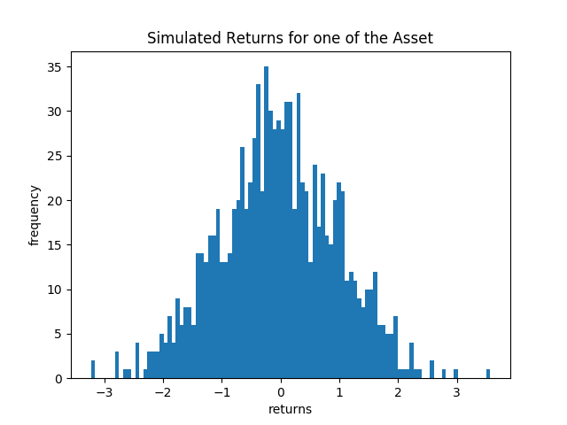
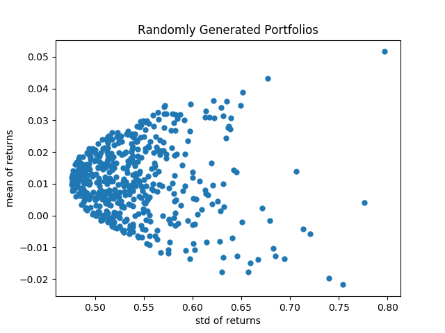
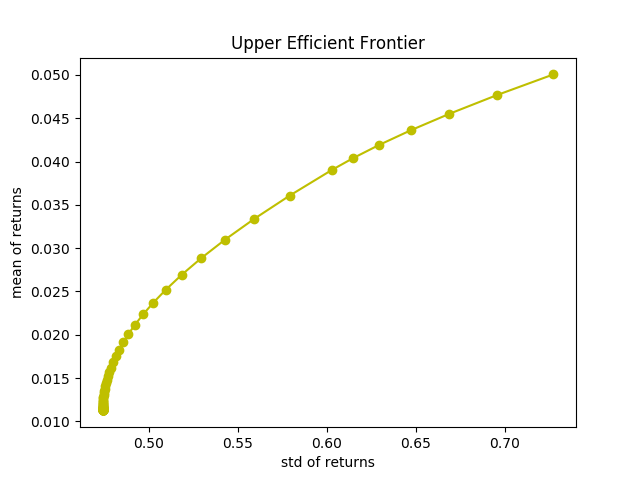
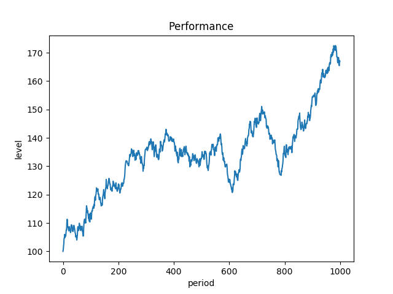

More that 60 years ago, economist Harry Markowitz showed the world a framework to manage the relation between risk and return in portfolios. Today, his insights are largly being used among the industry and therefore deserve our attention.
The following analysis was ran using Python and by following this amazing post written by Dr. Thomas Starke, David Edwards and Dr. Thomas Wiecki.
The aim is to definie the Global Minimum Variance porfolio by using 4 simulated stocks returns.
This is done in four steps:This first image shows the returns for one of the simulated stocks. It was generated with a normal distribution with mean zero, since MPT modeles required that investor's utility is cuadratic or that the join distribution of returns is normal.

We will assume this in orther to proceed, but this assuptions are hard to belive. Evidence suggests that returns tend to present a leptokurtic and negative skewed distribution and that investors increase their positions in risky assets while they get healthier.

Plot 3 shows portolio's constituents for the period xxx - xxx.

Plot 4 compares the performance of the portfolio against some famous portfolios.

Plot 4 compares the performance of the portfolio against some famous portfolios.